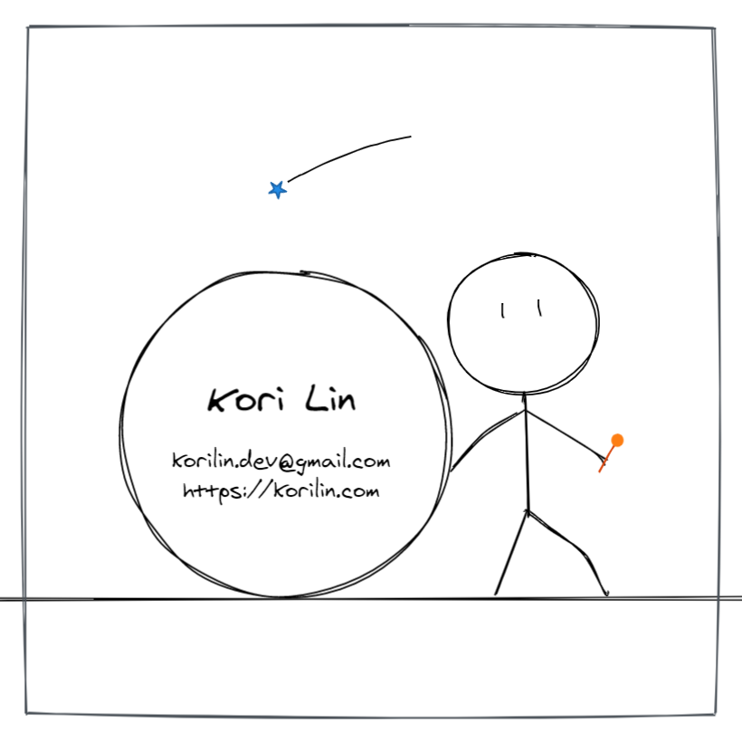

Welcome to my blog!
Hello! I'm Kori Lin, a Full Stack developer.

KUG
如果你也在学习 Kotlin，或对 Kotlin 这门语言感兴趣，欢迎你加入到 Kotlin User Group，你可以在 JetBrains Kotlin 官网中的 Kotlin User Groups List 中找到你感兴趣的 User Group。
 Kori Lin
Kori Lin 如果你也在学习 Kotlin，或对 Kotlin 这门语言感兴趣，欢迎你加入到 Kotlin User Group，你可以在 JetBrains Kotlin 官网中的 Kotlin User Groups List 中找到你感兴趣的 User Group。